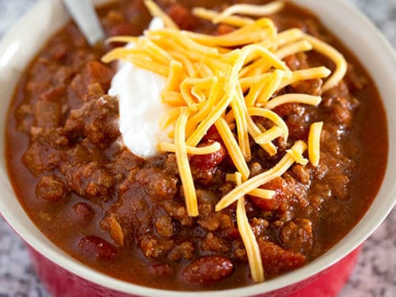

Easy Lunch Recipes
Recipe: Simple Cheesy Pesto Sandwich
| Price: | Time: |
|---|---|
| $ | 15-20 mins |

Image Source
Ingredients:
- Pesto
- Bread
- Tomatoes
- Lettuce or any greens of your choice
- Cheese
- Mozzarella
- Parmesan
- 1 Egg
- Salt
- Pepper
- Turkey Meat
Instructions:
- Coat 2 pieces of bread in Pesto
- Layer Mozzarella on top of bread
- Coat pan with oil then cook egg for prefered time
- Season with salt and pepper while waiting for it to cook
- Once egg is done cooking, put aside and pan fry bread
- When Mozzarella begins to melt, layer meat on top of toast
- Remove from pan, place on plate and layer egg on top
- (optional) cut up some slices of tomato or lettuce and layer in sandwich
- Put it all together and dig in!
Video Tutorial:
Recipe: Quick Chili
| Price: | Time: |
|---|---|
| $ | 10 mins |

Image Source
Ingredients:
- 1 pound browned hamburger (optional)
- 1 can chili beans
- 1 can white cannelli beans
- 1 package chil seasoning
- 1 can chilli ready tomatoes
- 2 tablespoons brown sugar
- 1/2 chopped green pepper
- 1/2 Vidalia onion
- Additional:
- Red peppers
- Jalapeno
- Cumin
Instructions:
- Brown hamburger and/or onions and green pepper. If using hamburger, drain excess fat in a skillet
- In a medium saucepan, combine beans, hamburger (optional), seasonings, tomatoes, brown sugar, onion and green pepper
- Heat on medium until chili begins to boil. Lower heat and let chili simmer
- Dig in!
Video Tutorial:
Recipe: Spinach Chicken Salad
| Price: | Time: |
|---|---|
| $ | 10-15 mins |

Image Source
Ingredients:
- 4 cups baby spinach
- 1-2 grilled boneless, skinless hicken breasts
- 2 tablespoons italian salad dressing
- 1 teaspoon sugar
Instructions:
- Grill chicken breasts in a George Forman grill or on the stove top with non-stick cooking spray or olive oil
- While chicken is cooking, combine sugar and dressing. Toss together with spinach
- Roughly chop chicken and add to salad
- Dig in!